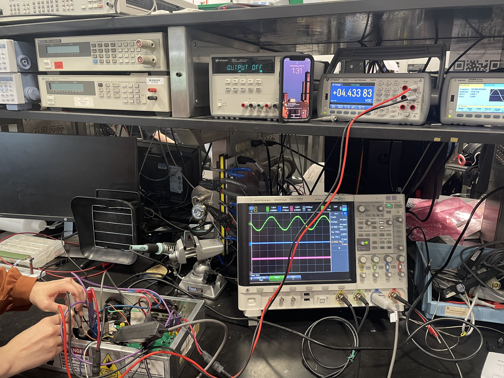

Power Quality Monitor and Submetering Device
ECE senior capstone · University of Illinois Urbana-Champaign
A low-cost submeter with integrated power-quality monitoring, built as my undergraduate senior capstone. Circuit-level measurement of consumption and power quality, with the data pushed off the device over Bluetooth or Wi-Fi and displayed in a browser.

Build
- ADE9153A and ADE9430 metering ICs for energy and power-quality measurement.
- ESP32 for Bluetooth and Wi-Fi data transfer.
- Real-time cloud telemetry and a web-based GUI.
- Over 24 hours of self-powered operation.